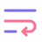
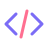

Truncate, slice and count strings with emoji safely in JavaScript
graphemely counts and cuts text by grapheme cluster, the characters people actually see. String length with emoji, truncate with an ellipsis, Unicode safe substring, reverse, pad and wrap, without ever splitting an emoji, a flag, a skin tone or an accent.
npm install @kwy404/graphemely
The problem in four lines
const family = '\u{1F468}\u{200D}\u{1F469}\u{200D}\u{1F467}';
family.length; // 8
('Hi' + family).slice(0, 3); // 'Hi\uD83D', broken
'cafe\u{301}'.split(''); // 5 items, accent detachedimport { length, slice, graphemes } from '@kwy404/graphemely';
length(family); // 1
slice('Hi' + family, 0, 3); // 'Hi' + family
graphemes('cafe\u{301}'); // 4 itemsThe family emoji above is a man, a woman and a girl joined by zero width joiners: 8 UTF-16 code units, 5 code points, 1 visible character.
Playground: native vs graphemely
Type or paste any text, including emoji, and every result updates as you type. Each operation shows plain JavaScript next to graphemely, running in your browser with the same build that ships on npm.
UTF-16 code units, code points, graphemes
Length
str.length
length(str)
what you see
Slice
Truncate
Reverse
str.split('').reverse().join('')
reverse(str)
characters intact
Split into characters
str.split('')
graphemes(str)
Features
Real length
Count graphemes, not UTF-16 code units.
Truncate
Ellipsis and word boundaries, never half an emoji.
Slice and at
Unicode safe substring with negative indices.
Reverse
Flags, skin tones and accents stay intact.
Split
Split a string into the characters users see.
Well formed
Detect and repair lone surrogates.

Pad and wrap
Fixed width text and word wrap by grapheme.

ESLint plugin
Find split(''), unsafe reverse and hand made truncation.
Tiny
About 2 kB gzipped, tree shakeable, zero dependencies.
Install
npm install @kwy404/graphemelypnpm add @kwy404/graphemelyyarn add @kwy404/graphemelybun add @kwy404/graphemelyimport { truncate, length, slice, reverse } from '@kwy404/graphemely';
// CommonJS
const { truncate } = require('@kwy404/graphemely');
// Deno
import { truncate } from 'npm:@kwy404/graphemely';API
| Function | Returns | Replaces |
|---|---|---|
graphemes(str) | string[] | str.split(''), [...str] |
length(str), count(str) | number | str.length |
slice(str, start?, end?) | string | str.slice, str.substring |
at(str, index) | string | undefined | str.at, str[i] |
splitAt(str, index) | [string, string] | two slices |
truncate(str, max, { ellipsis, wordBoundary }?) | string | str.slice(0, n) + '...' |
reverse(str) | string | str.split('').reverse().join('') |
padStart(str, n, pad?), padEnd(str, n, pad?) | string | str.padStart, str.padEnd |
wrap(str, width, { hard }?) | string[] | hand written word wrap |
isWellFormed(str), toWellFormed(str) | boolean, string | ES2024 methods, everywhere |
Full reference with examples in the README.
ESLint plugin
Find unsafe string code in an existing project. Flat config, ESLint 8.57 or newer.
import graphemely from '@kwy404/graphemely/eslint-plugin';
export default [graphemely.configs.recommended];- no-unsafe-string-split: reports
str.split('') - no-unsafe-reverse: reports
str.split('').reverse()and[...str].reverse().join('') - prefer-graphemely-truncate: reports
str.slice(0, n) + '...'
Guides
Truncate a string with emoji
Cut text to a length with an ellipsis, never half an emoji.
String length with emoji
Why an emoji has length 2, and how to count what users see.
Reverse a string with Unicode
Reverse text without scrambling flags, accents or emoji.
Split a string into characters
Get the visible characters, not code units or code points.
Substring without breaking emoji
A Unicode safe substring and slice with negative indices.
Remove lone surrogates
Detect and repair the broken halves of emoji.
Browser and runtime support
graphemely uses Intl.Segmenter in Node 16+, Chrome and Edge 87+, Safari 14.1+, Firefox 125+, Deno and Bun, and a built-in Unicode UAX #29 fallback everywhere else. Output is ES2020.